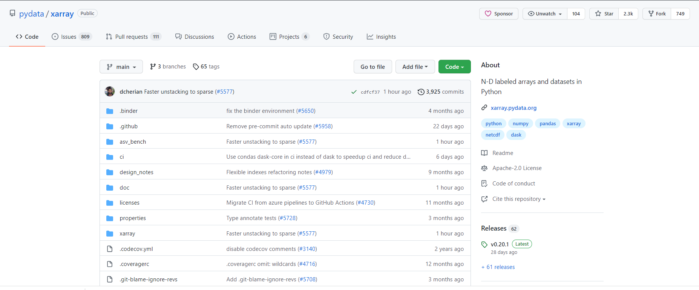
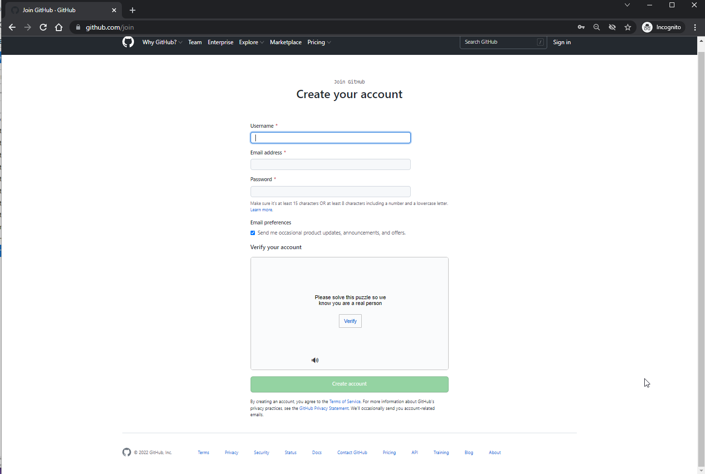

What is GitHub?
Overview:
What is GitHub?
No experience necessary!
Free and open-source software (FOSS)
Version control systems (VCS)
GitHub = FOSS + VCS + Web
Register for a free GitHub account
What is GitHub?
GitHub is a web-based platform for the dissemination of free and open-source software.
If you are reading this lesson, you are already using GitHub, as that is where Project Pythia hosts its content!
GitHub provides the following:
Version control for free and open-source software and other digital assets
Project discussion forums
DevOps to facilitate building and testing software
Bug reporting, patching, and tracking
Documentation hosting
An environment that fosters collaboration
Although GitHub can host any digital asset, the most common use case for GitHub is for individuals or organizations to house repositories of free and open-source software:
No experience necessary!
You do not need to be an experienced software developer or be proficient in version control to make use of GitHub! Perhaps, though, you have used a particular package (e.g., Xarray or Matplotlib) and have had questions about its usage, noticed a bug, or had an idea for a new feature for the package! You can participate in a project’s development via GitHub the same way you might have interacted with its developers via email in the past.
Free and open-source software (FOSS)
Much of what we term the scientific Python software ecosystem consists of free and open-source software. Often abbreviated as FOSS, this means:
The software is free of charge, and
The various files which contain the software code are publicly available.
Did you know?
The Python language itself is an example of FOSS!
FOSS is nothing new. For example, the Linux kernel source code has been available to download for many years.
Free \(\neq\) open source!
Just because a software package may be free does not mean that its source code is open! For example, although Nvidia makes its video drivers available for free download, the source code for those drivers is proprietary.
Arguably, the greatest advantage of open-source software is that it enables collaborative sharing, and thus community feedback.
Types of community input may include the following:
Issues: usage questions, bug reports, feature requests
Pull requests: a user can ask that that their changes/additions be incorporated into the project
Discussions: a community forum on the open source project
Version control systems (VCS)
We will discuss version control in more detail later in this series, but the need to track and manage changes to a project, especially one that involves software, has long been known. Over the years, FOSS developers have used VCS such as cvs, svn, and most recently, git. All of these systems are command-line tools.
FOSS and VCS on the Internet
A successful FOSS project needs to be accessible via the web. As mentioned before, the Linux kernel and the Python language have long been available using first-generation remote access protocols such as FTP and HTTP, and SSH. Later, VCS tools such as cvs and svn established their own TCP protocols for remote access. With the advent of git, web-based services that supported HTTP(S) and SSH sprung up. Each of these VCS leverages the concept of a particular FOSS project as a code repository.
Did you know?
Linus Torvalds, the original developer (and still the lead maintainer) of Linux, is also the original developer of Git!
Stay tuned!
We will discuss version control and the use of Git via the command line later in this series.
FOSS + VCS + Web = GitHub
Perhaps the most popular web-based platform that uses Git for FOSS VCS is GitHub. GitHub hosts all of the Python software packages that Project Pythia covers as code repositories (we’ll use the term Git repo, or more generally just repo henceforth to represent a GitHub code repository).
For example, here is a screenshot from Xarray’s GitHub Git repo:
Note
The above screenshot is from one moment in time. When you visit the Xarray GitHub link above, it will no doubt look different!
Register for a free GitHub account
While one can freely browse GitHub repositories such as Xarray anonymously, it’s necessary to log into a unique (and free) user account in order to take advantage of GitHub’s full capabilities, such as:
Opening Issues and Pull Requests
Participating in Discussions
Hosting your own repository
Your next step (if you haven’t already) should be to register for your free GitHub account. As with many online services, you will specify a user ID, password, and email address to use with your account.
To do so, simply point your browser to the GitHub sign-up page:
While GitHub offers paid options, a free account is typically all that is needed!
Summary
GitHub serves as a web-based platform for digital assets, particularly FOSS.
GitHub uses Git as its version control system.
You can set up a free user account on GitHub.